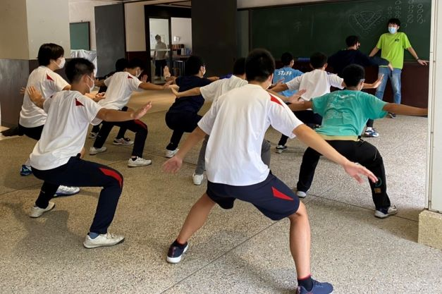
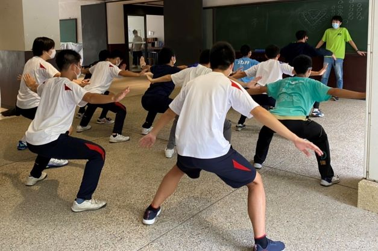

灘校体育祭
応援団特集
壱組
壱組団長 藤田真之介
- 今年のテーマは？
- 苦労した点は？
- 注目ポイントはどこ？
- 最後に、意気込みをどうぞ
コロナ禍ということで無観客でやる初めての体育祭なので、いつもの歓声がない分自分たちの応援で場を盛り上げたい。それで選手たちがアツくなってくれれば嬉しい。
コロナ対策を考えて基本的にマスクを付けっぱなしでやらなければいけなかったことと、最終下校が5時までと放課後などの練習時間が短かったこと。
全体的にタイミングをずらして綺麗に見せる振りが多いので、流れるような演舞を楽しんで欲しい。また、後半は力強さも加わった圧巻のパフォーマンスをとくとご覧あれ！
大変な時期だけど、9月中に開催してくれることに感謝。高3最後の思い出作りを全力で楽しむ。こんな時期だけど、こんな時期だからこそ、過去最高の体育祭と言えるようなものにしたい。
弐組
弐組団長 安井泰介
- 今年のテーマは？
- 苦労した点は？
- 注目ポイントはどこ？
- 最後に、意気込みをどうぞ
朱雀のように、どのような状況でも力強い美しさを持つことをテーマにしています。
タイミングが取りづらいところが多く、掛け声を揃えるのが大変でした。
動きの揃い具合はもちろん、時折出てくる変わった掛け声に注目してほしいです。
豊富な応援団経験を持つ団長を中心として、クラス一丸となって頑張ります！
 

参組
参組団長 大杉明史
- 今年のテーマは？
- 苦労した点は？
- 注目ポイントはどこ？
- 最後に、意気込みをどうぞ
体育祭を全力で我武者羅に頑張る生徒たちへのエールとなることがテーマです。
踊りが難しくリズムも速いので踊りを覚えて揃えることが大変でした。
全体としてキレのある動きやセンスによる動きの揃い具合、また、とても情熱的な掛け声に注目してください。
応援団全員が一丸となって3組を優勝へと導けるような応援ができるように全力で頑張ります。
肆組
肆組団長 秋山慶一郎
- 今年のテーマは？
- 苦労した点は？
- 注目ポイントはどこ？
- 最後に、意気込みをどうぞ
「ダイナミック」です。演舞の中にウェーブや隊形移動を多く取り入れ、ダイナミックで迫力ある演舞を目指しました。
例年に比べて下校時刻が1時間早かったり、コロナワクチンの接種の影響で直前までやむを得ない団員の欠席があったりしたことです。 練習時間を確保するのが大変でした。
縦や横への様々な方向のウェーブや、扇子を使ったフィナーレに注目してほしいです。
これまでの練習でやってきたことを、全て出し切ります。